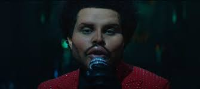
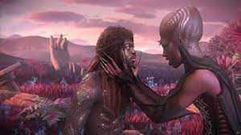
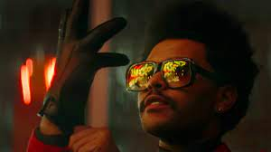
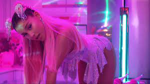
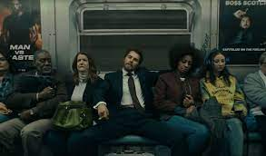

Popular Music Video Reviews
"GOLDEN" BY HARRY STYLES: This is such a fun music video that fits perfectly with the song! The editing is genius and really tells a story. I love music videos that are cut to match the beat and rythm of the song; this music video does just that. You can also really see Style's personality shine through. The location of this music video is also increibly beautiful. It also features some of the area locals! Rating: 10/10
"LUCID DREAMS" BY JUICE WORLD: This was the most popular music video/song in 2019. It was heavily talked about on the internet, and well praised. This music video feels kind of like a trip. There are many different and interesting visuals in the video that really portray the message of the song well. Shout out to the camera man responsible for these shots, he's a good friend of mine. Rating: 10/10
"SAVE YOUR TEARS" BY THE WEEKND: This music video came as a suprise to a lot of people because of The Weekend's dramatic change of appearance. Many speculated that he received some bad plastic surgery. Although it is quite obvious that it was makeup. This music video helps to tell the story that is being told by his "After Hours" album as a whole. By itself it is kind of a confusing video but if you watch it along with the other videos from the album the story will become clear. Rating: 9/10

"MONTERO (CALL ME BY YOUR NAME)" BY LIL NAS X: This music video was met with so much criticism when it came out. There are depictions of the devil that made some people uncomfortable. But there is simply no doubt about it, this is a great music video. Probably one of my all time favorite videos to be completely honest. The visuals are insane. Rating: 10/10

"BLINDING LIGHTS" BY THE WEEKND: I couldn't not talk about this music video. Blinding lights was the most popular song in 2020 by far. As an editor I am completely facinated by this video. It is so fast paced and trippy I love everything about it. Probably also one of my favorite videos of all time. I also love that the Weeknd focusus so heavily on storytelling with his work. Rating: 20/10

"7 RINGS" BY ARIANA GRANDE: This music video was widely anticipated by many people. It is honestly a whole production. I tend to find it really interesting when artists decide to make short films out of their music videos. It is a really fun watch, and the imagery fits well with the music itself. Ariana Grande is incredibly talented, and this is a cool music video from her. Rating: 8/10

"THE MAN" BY TAYLOR SWIFT: This music video is super interesting because it features Taylor Swift disguised as a man. The song talks about how men are treated differently in society, and the kinds of things they get away with that women are constantly scrutinized for. This is a video that a lot of female identifying people can relate to. And I am all for calling men out on their bullsh*t. Rating: 20/10
